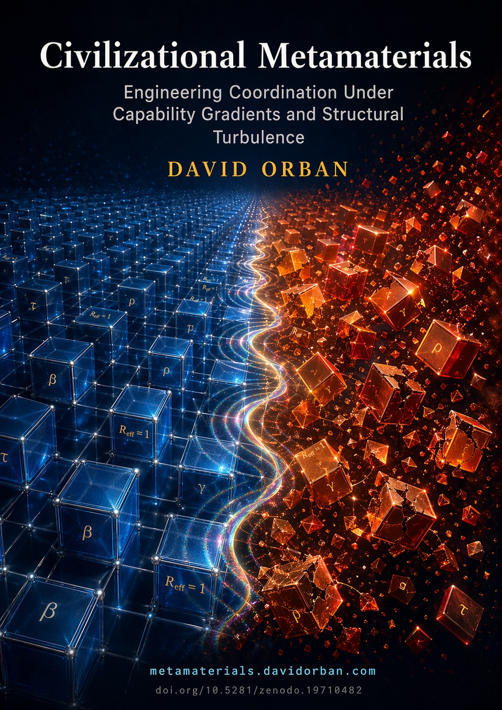
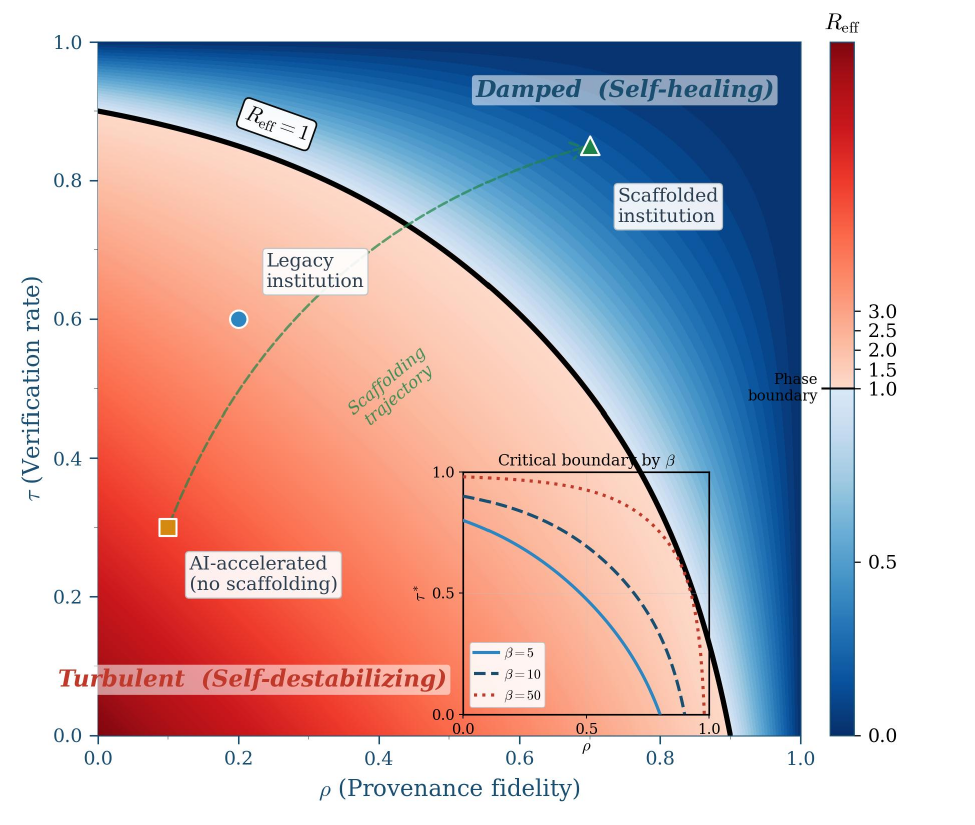

Engineering Coordination Under Capability Gradients and Structural Turbulence
Submission version (no cover): civilizational-metamaterials-agi26-r3.pdf
We argue that governance must transition from a normative discipline to an engineering discipline, and develop a formal framework — inspired by the physics of metamaterials — to make this transition quantitative and testable. Artificial General Intelligence affects civilization primarily by increasing decision velocity while human verification capacity remains bounded. When the cost of validating AI-generated outputs exceeds the expected utility of acting on them, rational agents default to inaction: a stable but catastrophic Nash equilibrium we term the Freezing Equilibrium.
Drawing on metamaterials, where emergent macro-properties arise from designed microstructure, we develop a phenomenological constitutive law for institutional coordination, predict a sharp phase transition between self-healing and self-destabilizing regimes, introduce a three-class provenance taxonomy including context binding, and derive four falsifiable hypotheses with a proposed 12-week stepped-wedge cluster-randomized trial in government grant review panels.
The core result is a phenomenological equation for the effective reproduction number of unverified decisions flowing through an institution:
where:
When $R_{\text{eff}} < 1$, unverified decisions decay — the institution is in the self-healing regime. When $R_{\text{eff}} > 1$, they cascade — the self-destabilizing regime. The phase boundary $R_{\text{eff}} = 1$ is the critical threshold, and the sub-critical condition can be engineered by institutional design of ρ and τ.
Figure 2 shows $R_{\text{eff}}$ as a function of ρ and τ for $\beta = 10$, $\gamma = 1$. The bold contour marks the phase boundary. The blue region is self-healing; the red region is turbulent.

Drag the sliders to see whether your institutional parameters place the system in the damped or turbulent regime.
A phenomenological equation for institutional coordination parameterized by designable features, with a sharp phase transition derivable from branching-process theory.
Cryptographic (Class A), institutional (Class B), and context binding (Class C — the novel third class). Maps onto NIST AI RMF and ISO 42001.
AI agents treated as distinct governance primitives — synthetic principals that require calibrated delegation depth and explicit visibility, not human-principal proxies.
Four falsifiable hypotheses with a concrete 12-week stepped-wedge cluster-randomized trial in government grant review panels, with pre-specified statistical analysis plan and OSF preregistration template.
| ID | Prediction | Falsifier |
|---|---|---|
| H1 | Panels crossing $R_{\text{eff}} = 1$ exhibit a sharp regime change — exponential-tail cutoff rather than power-law tails in cascade size. | No regime change at threshold; power-law tails persist across the boundary. |
| H2 | Combined ρ and τ interventions are superadditive; the joint effect exceeds the sum of individual effects (synergy term γρτ > 0). | Additive or sub-additive joint effect. |
| H3 | Coordination improvements are directional — within-unit effects differ from cross-boundary effects (anisotropic tensor). | Isotropic response; no directional difference. |
| H4 | Withdrawal of interventions is asymmetrically costly — recovery requires a larger push than the original transition (hysteresis). | Symmetric recovery on withdrawal. |
The paper proposes a 12-week stepped-wedge cluster-randomized trial in government grant review panels. Cohorts of panels are sequentially crossed from control to the intervention — a Class A/B/C provenance scaffolding system — with the primary endpoint being whether a panel's decision process crosses $R_{\text{eff}} = 1$.
The full protocol, statistical analysis plan, power analysis, OSF preregistration
template, and synthetic data generator are in the
experiments/ directory.
This is a proposed, not yet registered trial. Institutions interested in
running the protocol should see
COLLABORATION.md.
@misc{orban2026civilizationalmetamaterials,
author = {David Orban},
title = {Civilizational Metamaterials:
Engineering Coordination Under Capability
Gradients and Structural Turbulence},
year = {2026},
howpublished = {Manuscript under review at AGI-26},
note = {Revision 3},
doi = {10.5281/zenodo.19710482},
url = {https://doi.org/10.5281/zenodo.19710482}
}
DOI: 10.5281/zenodo.19710482. Machine-readable citation in CITATION.cff.
Requires Python 3.11+, a TeXLive distribution, and make.
git clone https://github.com/davidorban/civilizationalmetamaterials.git cd civilizationalmetamaterials make -C paper paper # rebuild the PDF python -m pytest code/ # run the reference-implementation tests make -C paper figures # regenerate all 10 figures from source
Encountered a discrepancy? Open a replication issue.